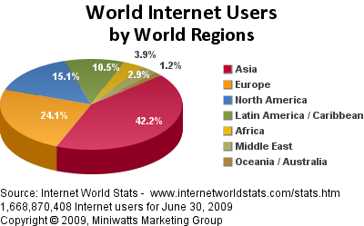
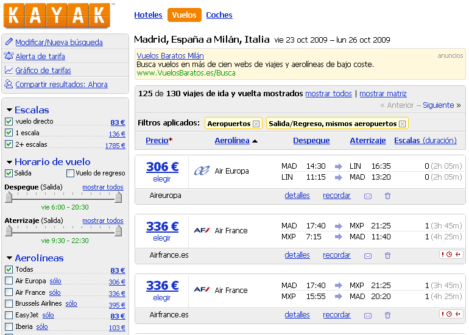
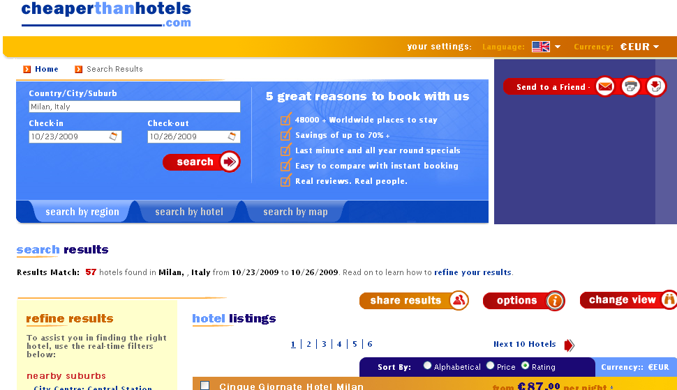
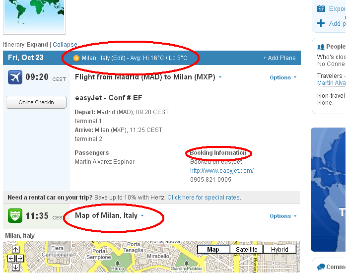
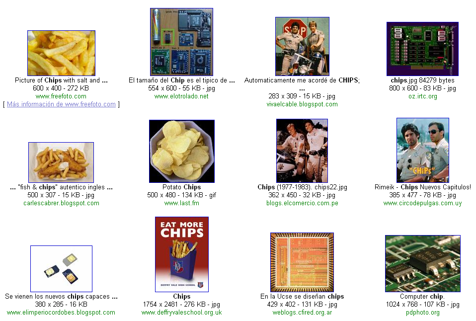
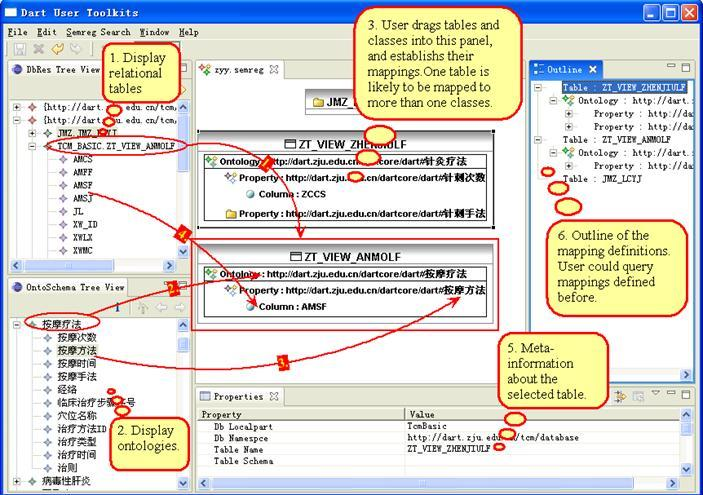

World Wide Web Consortium

Desde el origen de la Web...
- Modelo de gestión de información en el CERN (Tim Berners-Lee, 1989)

Information Management: A Proposal, Tim Berners-Lee, CERN, March
1989, May 1990, [http://www.w3.org/History/1989/proposal.html]
WorldWideWeb

Crecimiento de la Web (páginas)
- 1990: 1
- 1998: 26.000.000
- 2000: 1.000.000.000
- 2008: > 1.000.000.000.000
... un grafo 50.000 veces el mapa de carreteras de EEUU (We knew the web was big..., Google Blog)
Crecimiento de los usuarios
- Población Mundial : 6.700M
- Usuarios Internet/Web: 1.700M

¿Qué aporta el W3C a la Web?
Integración de información
- Deseamos organizar un viaje a Milán...
Podemos seleccionar la aerolínea española...

...la italiana

...o con ayuda de un buscador

Buscamos alojamiento... barato

... o a través de una agencia (italiana)
... o algo de confianza

¿Y si nuestro viaje no se acaba ahí?

Integración de la información
- Hemos buscado
- Diversa información,
- en muchos sitios diferentes,
- con diferentes servicios,
- con representación distinta,
- incluso, en distintos idiomas
- Podemos integrar esta información
- Proceso tedioso y dependiente de nuestra pericia
Información subyacente
Las páginas sólo muestran lo que los diseñadores quieren
- Los datos reales están en
- Bases de Datos, ficheros XML, hojas Excel, etc.
Aparece la integración de datos
- Sitios expecializados (TripAdvisor, Expedia) hacen algo más
- Combinan datos de diversas fuentes
- Muestran los resultados que ellos quieren
- Quizás queramos utilizar esos datos y combinarlos nosotros
Muchos otros ejemplos...

... las Redes Sociales

- Omnipresentes en estos días
- LinkedIn, eConozco, Friendster, Facebook,...
- Los datos no son intercambiables
- ¿Cuántas veces has tenido que introducir los contactos?
- Las aplicaciones deberían poder intercambiar los datos de una forma estándar
- Teniendo en cuenta las cuestiones de seguridad y privacidad
Objetivo: La Web de los Datos
Usar los datos en la Web de la misma forma que los documentos:
- Enlazar los datos entre sí
- Usar los datos de la forma que queramos (visualizarlos, combinarlos, etc)
- Cualquier aplicación debería poder interpretar cada parte del dato
¿Esto no es lo que ya hacen los "mashups"?...
Ejemplo de "mashup"

En cierta manera, sí
- Explotan la potencia de la Web de Datos
- Pero están forzados a buscar soluciones ad-hoc
- Servicios Web exponiendo los datos
- Distintas APIs, distinta estructura
- No se usa una forma estándar para acceder a los datos
- La "Web de Datos" se debería comportar como la "Web de los Documentos"
Proyecto Linked Open Data
- Objetivo:
- Exponer conjuntos de datos (RDF)
- Establecer enlaces entre distintos conjuntos de datos
- Posiblemente establecer puntos de consulta (SPARQL)
- Conjuntamente, miles de millones de tripletas, millones de enlaces...
- La base para una Web de Datos
Nube de Linked Open Data (marzo 2008)

Nube de Linked Open Data (septiembre 2008)

Nube de Linked Open Data (julio 2009)

La Web de los Datos y Servicios

Lenguaje para personas no para máquinas
- Representa la información usando
- lenguaje natural (español, inglés, chino,...),
- gráficos, multimedia, diseños de las páginas
- Los humanos podemos procesar esta información (fácilmente)
- Deducimos hechos desde información parcial
- Creamos asociaciones mentales
- Asimilamos información desde distintos sentidos
- aunque, existen personas con ciertas limitaciones
...más tareas de humanos
- Habitualmente se combinan los datos en la Web:
- Búsquedas en diversas librerías digitales y con distintos formatos
- Información sobre hoteles y viajes procedentes de distintas fuentes
- ...
- De nuevo, los humanos podemos combinar esa información (fácilmente)
- Incluso si utilizan diferentes terminologías
- ¿Y las máquinas?...
Evolución de la Web Tradicional...
- Los humanos podemos entenderlo (más o menos)

... a la Web Semántica
- Lo entendemos nosotros y las máquinas

Problema: Integración de Bases de Datos
- Las BBDD son diferentes en estructura y en contenidos
- Muchas aplicaciones necesitan manejar varias BBDD
- Tras la fusión de compañías
- Combinación de información administrativa (e-Government)
- Investigación bioquímica, genética, farmacéutica
- ...
- El caso es que la mayoría de estos datos están en la Web
- (aunque no necesariamente públicos)
El caso es real
Problema: Redes Sociales
- Omnipresentes en estos días
- LinkedIn, eConozco, Friendster, Facebook,...
- Los datos no son intercambiables
- ¿Cuántas veces has tenido que introducir los contactos?
- Las aplicaciones deberían poder intercambiar los datos de una forma estándar
- Teniendo en cuenta las cuestiones de seguridad y privacidad
Problema: Bibliotecas digitales
- Son catálogos en la Web
- Los bibliotecarios han sabido hacer esto siempre
- El objetivo es tener los recursos en la Web
- Tener en cuenta los recursos multimedia
- Además, los buscadores deberían ser bibliotecarios también
- Ayudarnos a encontrar las publicaciones adecuadas
Problema: ambigüedad en las búsquedas

Y... ¿Hay solución a todo esto?
¡Sí!
Fiabilidad en las búsquedas

Búsqueda inteligente para servicios online

Mejora de las búsquedas (BOPA)

Organización de recursos de distinta naturaleza

Integración de conocimiento de Medicina China

- Sobre 80 bases de datos, con 200.000 registros en cada una
Mejora la búsqueda y navegación en portales


{kind=link}